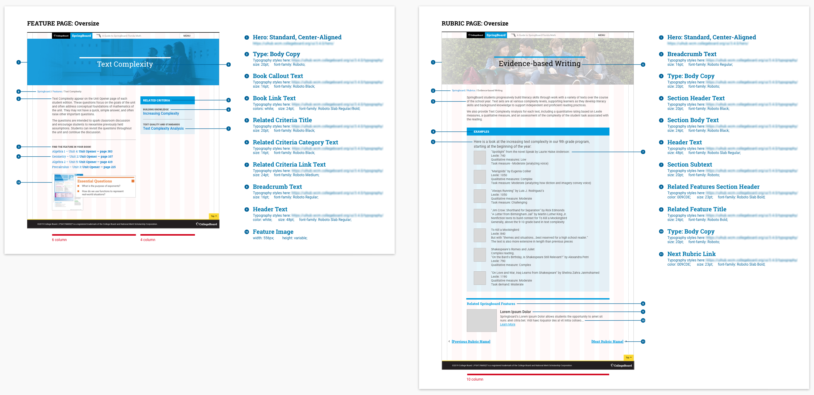
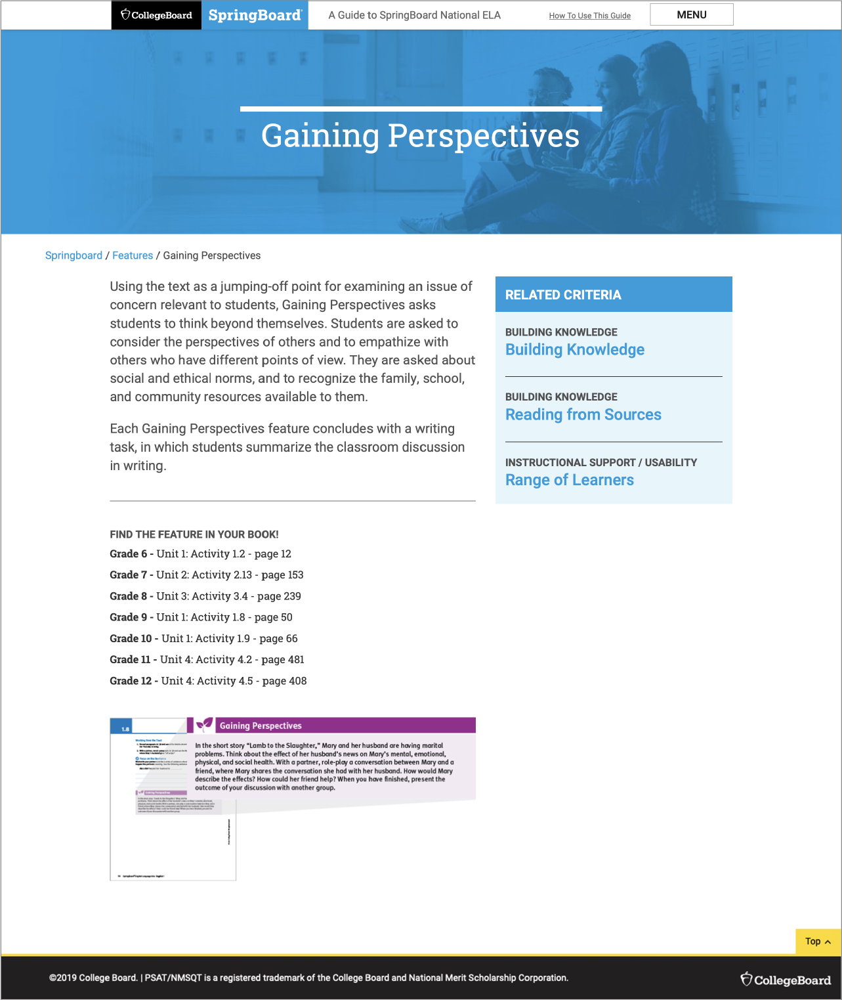
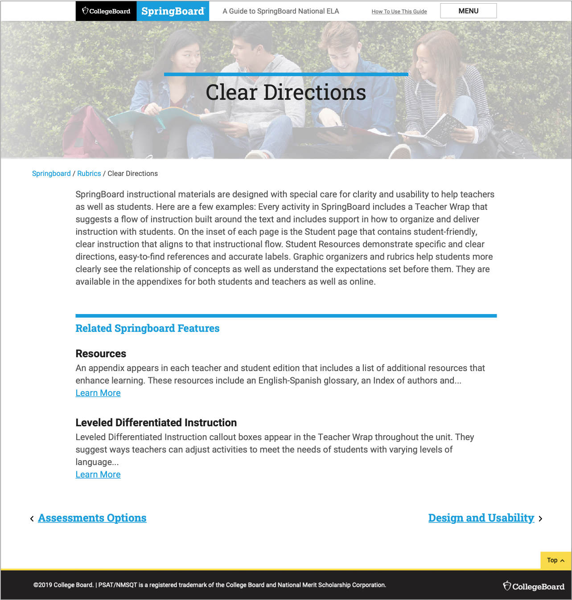
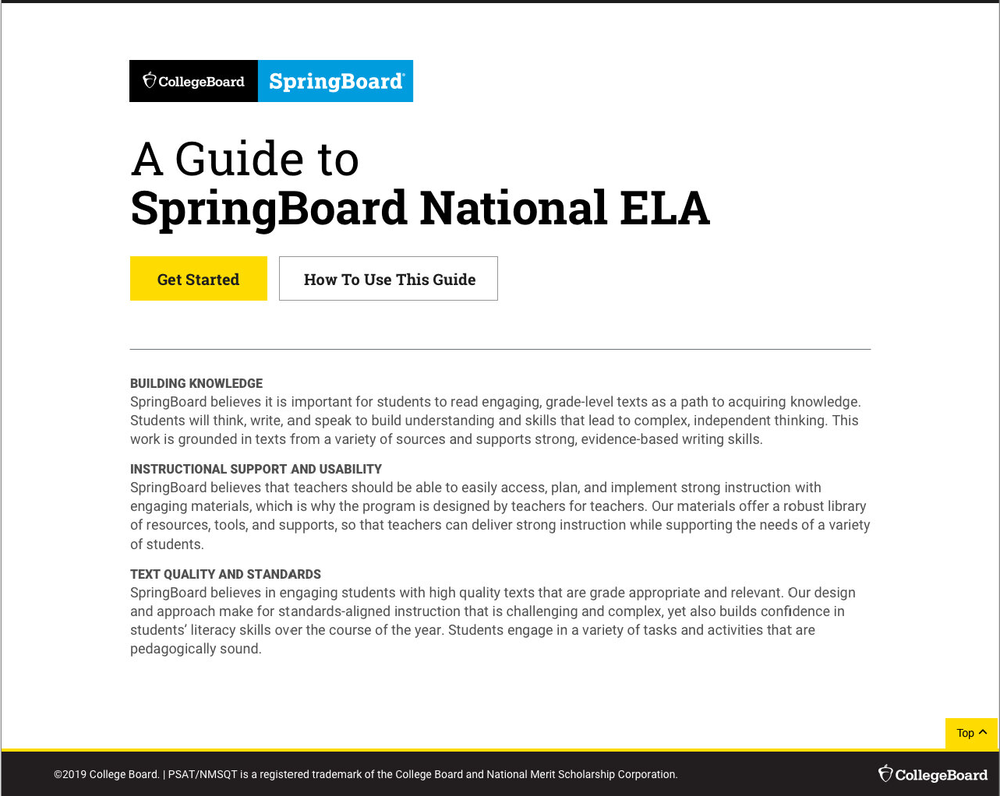

Springboard Guide
SpringBoard is a Math and English Language Arts (ELA) instructional program for grades 6–12. Developed by teachers for teachers, SpringBoard offers core instructional materials in print and digital that are fully aligned to state standards, Advanced Placement (AP) coursework, and the SAT Suite of Assessments.
The Guide to SpringBoard ELA provides comprehensive information to help demonstrate how SpringBoard meets national requirements for quality and standards alignment.
The Problem
The first iteration of the website was tested and users found difficulty finding information where they were supposed to.
A few pain-points include:
- Information that is considered important is often overlooked and assumed to be part of the footer.
- The right rail information is a static section, yet because of how it looked, a lot of users tried to click on it to "see it in action" (content did not help in this instance).
- The images were very small and there was no way to enlarge the image.
Brief Descriptions
Rubrics are a list of criteria commonly used to review and evaluate K-12 instructional materials. Users can find the requirements that are most important to them and see how Springboard meets them. Rubrics are organized in three main categories:
- Building Knowledge
- Text Quality and Standards
- Instructional Support / Usability
Springboard Features gives an in-depth view of Springboard’s special features including personalized tools and teacher supports.
What We Found
There were two types of users, so we created a system where they could find the information they needed, the way they best could.
As we were reviewing the user feedback and working through the content, we noticed that there were two types of users; some came wanting to know how the Springboard Feature related to the Rubrics, while others wanted to know all Features related to a specific Rubric. Due to this, we decided to create an new Rubrics menu page that categorized the Features into the three categories.

My Role
I was brought in as the visual/UI lead and also worked on parts of the UX.
I designed the landing page, the "Features" pages, the "How To" page, and was in charge of all imagery.
I used the research findings to start designing the Features page and thinking of how we could move the information around to make it more useful to our users. Looking at the original design:
- Since information that was considered important was often overlooked and assumed to be part of the footer (see image in "The Problem"... we decided to move the information to the top, right next to the description (or after in mobile).
- The original right rail information was static, but due to it's prominence and design, users kept wanting to click on it even if it was merely telling them where the examples could be found, and not linking them to them. The content was moved to under the main description to put less emphasis on it as a section, and more like a continuation of the main content. I worked with a content strategist to make sure the content worked with the description so there would be more clarity.
- The image in the original was very small and did not enlarge, which made it difficult for users to view. The new placement and size of the image allows for better legibility and also allowed for it to enlarge it, if needed.
A few of the iterations as the team went back and forth on what information and how much of it to display.

When design was finalized, I spec'd out all the pages for the agency to build and aligned it to our design system the best I could, as some of the elements were custom to the website. I reviewed the work as it was being built in desktop and mobile format to make sure things were translating correctly.
The Result
After months of research, design, and build, we launched both the National and Texas ELA guides.



